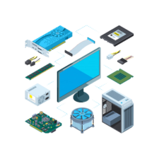
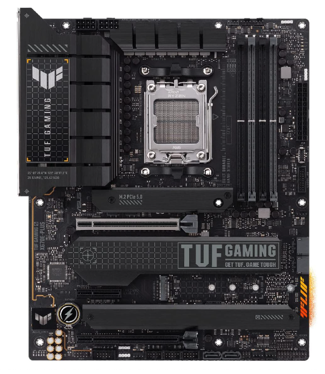
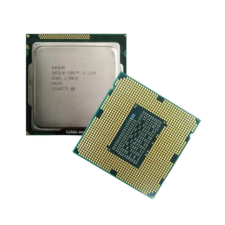
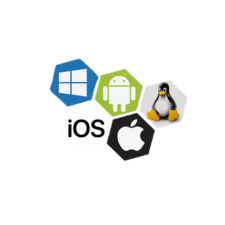
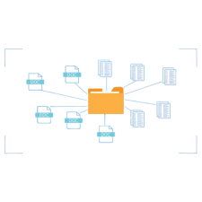

Fundamentos de Tecnologia da Informação:
Hardware Computadores:
Hardware de computadores é todo o conjunto de peças físicas que podemos tocar em um sistema computacional. É como o “corpo” da máquina, formado por componentes que trabalham juntos para que tudo funcione — desde ligar o computador até executar programas complexos. Ele é essencial porque sem hardware nenhum software rodaria; é a base que dá suporte para todo o funcionamento.
Placa Mãe:
É o “centro de conexão” do computador. Todos os componentes — CPU, RAM, placa de vídeo, armazenamento — se conectam nela. Ela é responsável por permitir que essas peças se comuniquem e trabalhem juntas.
Processador:
É o “cérebro” do computador. Ele interpreta e executa instruções, calcula operações e coordena o funcionamento dos outros componentes. Quando você abre um aplicativo ou joga um game, é a CPU que faz as contas para isso acontecer.
Memória Principal (RAM):
É a “mesa de trabalho” do computador. Ela guarda temporariamente as informações que o sistema está usando no momento. Quanto mais RAM, mais tarefas o computador consegue realizar ao mesmo tempo sem travar.

Sistema Operacional:
Um sistema operacional é o software principal que faz o computador funcionar. Ele é como um “gerente” que cuida de tudo o que acontece na máquina: organiza arquivos, controla os programas que você abre e gerencia os componentes físicos, como teclado, memória, processador e tela.
Ele também cria a interface que você usa no dia a dia — como a área de trabalho do Windows, o menu do celular ou a tela inicial do Linux — fazendo a ponte entre você e o hardware.
Sem um sistema operacional, o computador até teria os componentes, mas não conseguiria executar praticamente nada. Sistemas conhecidos são o Windows, Linux, macOS, Android e iOS, cada um com seu estilo e suas aplicações.
4 Exemplos:
Sistema de Arquivos:
O sistema de arquivos é o recurso do sistema operacional responsável por organizar, salvar e localizar todos os arquivos dentro de um dispositivo, como HD, SSD, pendrive ou cartão de memória. Ele funciona como uma grande estante digital, onde cada documento, foto, programa ou pasta tem seu lugar definido. Sem um sistema de arquivos, os dados ficariam misturados e seria impossível encontrá-los ou até mesmo armazená-los corretamente.
Como funciona o modo texto (CMD):
O modo texto, representado no Windows pelo CMD, é uma forma de usar o computador digitando comandos ao invés de clicar em ícones.
Nele, o usuário conversa diretamente com o sistema usando palavras e instruções simples, como dir para listar arquivos, cd para mudar de pasta e mkdir para criar diretórios.
Esse modo dá acesso direto ao “coração” do sistema, permitindo executar tarefas rapidamente, automatizar processos e resolver problemas que às vezes o modo gráfico não consegue mostrar. É muito usado por técnicos, programadores e administradores de sistemas.
Software de Escritório:
Software de escritório é o conjunto de programas criados para ajudar pessoas e empresas a realizar tarefas do dia a dia, como escrever textos, montar planilhas, criar apresentações, organizar informações e gerenciar documentos. Ele faz parte da rotina de praticamente qualquer trabalho moderno, porque facilita a criação, edição e compartilhamento de conteúdos.
Esses softwares geralmente incluem editores de texto, planilhas eletrônicas, ferramentas de apresentação, gerenciadores de e-mail e até aplicativos para organizar dados e reuniões. São programas pensados para tornar o trabalho mais rápido, mais organizado e mais eficiente.